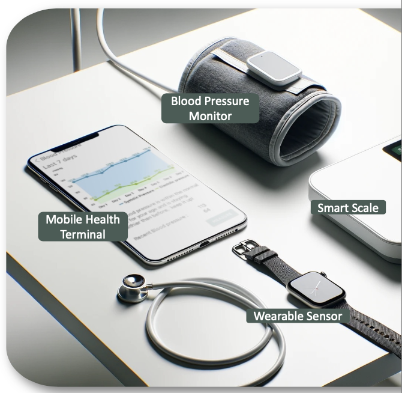

About Me
I am a Computer Science graduate from the University of Nottingham Ningbo China (UNNC). My research focuses on applying computer vision and machine learning to enhance medical diagnostics and patient care, particularly in biomedical image computing.
Research
Projects

IoT Health Monitoring
Developed an IoT-based health monitoring system with elder-friendly interfaces.
Learn More